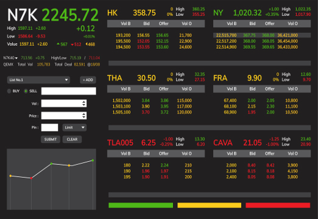
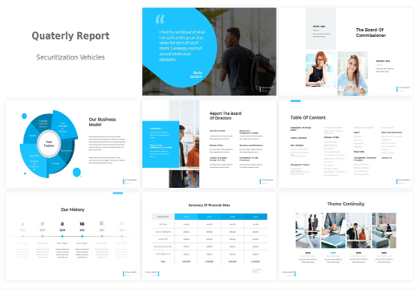

A 30 year Digital Journey
Creating new business oppportunities through digitalization
2022
Crypto Process
Working for a corporate bank, I have been confronted with large manual processes that were slowing down the crypto business I was developing. To overcome this, we have developed a workflow based application which is connecting together the various sub-applications making the management of crypto orders fully digital among the different departments and providers.
2020
Tokenization platform
Some customers wanted to evaluate more advanced options than crypto currencies integration, being able to create their own products such as bonds or equities. We created a prototype platform demoing how the issuance of a digital asset could look like in the future. Within this prototype, I featured the experience gathered within previous experiences in particular from the certificate platform but enhancing this with the digital means Ethereum is bringing
2018
Crypto Integration
Working for a core banking software provider, it became clear that the crypto assets should be seamlessly integrated in the core platform, just as any other asset. For this, I created and sold to the company's customers an extension to buy / sell and transfer crypto currencies. This new product has positioned the company on the crypto map being one of the very few traditional vendors able to handle crypto currencies
2016
Digitalized Parking Coin
Looking at potential use cases for blockchain, which were not disrupting very well established eco-systems, we have been looking at using Ethereum to create a dedicated coin to pay parking meters in a full digital way. We developed an IoT device connected to the Ethereum infrastructure to issue the parking ticket in a machine-to-machine communication.
2014
Blockchain emergence
2014 was after 2009 an important milestone for the blockchain world. Ethereum was born! Applied to the industry I have been working with so far, it meant a lot: having a true end-to-end digitalized process without having to manage the reconciliation of piles of messages anymore. Atomic DVP is round the corner with this technology as well as all sorts of new features that do not even exist now. I started a consulting business training C-level on the blockchain benefits.
2012
Digitalized Certificate Platform
A large investment bank had an issue after the financial crisis the market; they had to pivot into flow business as the highly structured market had disappeared. The issue there is that a flow business system must be digital, handling large volumes end to end: from issuing to booking through pricing and contributing. The success of this project came from this full process digitalization enabling up to 4K products to be created and contributed in a day
2010
Mobile Enterprise Integration
End of 2008, one year after the iPhone, Android was launched. This was clearly showing the direction delivering a completely new experience. After the first trials I made in the beginning of the 2000s, the disruption brought by those new devices was obvious. I decided to jump in that train and started working on digitalizing end-to-end processes. As an example, I demoed the integration of a mobile for a car insurance, from the accident to the reparation using a mobile connected to the enterprise platform
2008
Service Oriented Architecture
As the business was growing further being one of the world’s leaders, the number of systems to be integrated grew significantly raising the overall complexity. We needed a more granular approach to avoid redundant functions between systems and maximize reuse. We started from a functional map to identify the core services the platform had to deliver and progressively connected the new services together thanks the flexibility of the infrastructure layer
2006
Enterprise Application Integration
Improving Straight Through Processing further required other means having a shared common data representation across the whole value chain. This capability was key in the merger mentioned before and has been enhanced over time to integrate more systems together and cover more processes. These tools have been able, not only to facilitate the integration of the various software packages, but also to bring more flexibility in changing the business processes
2004
A digital merger
Two large investment banks merging with extreme tight deadlines was a huge challenge. The traditional approach would have been to perform the merge at accounting level to have a common book. We took a more radical approach, merging the positions at front-office level feeding all the imported positions is the target system. This was performed thanks to the existing digitalized infrastructure which was able to digest hundreds of thousands of imported trades
2002
Web and Mobile Fx Trades
After having deployed in 1998 an internal digital broker for Fx and Treasury, a web and mobile interface was a natural expansion to this project. This was delivering an enhanced digitalization allowing customers to trade directly on the platform. Security being an important concern, the whole platform was secured by a Public Key Infrastructure, each customer having his personal certificate stored on a smart card
2000
Risk Grid Computing
With increasing volumes of derivatives, the requirements of computing power were becoming challenging even for the most powerful servers. At the same time microprocessors, following the famous Moore law were getting every year more powerful at a very competitive cost. Therefore, the idea of distributing the risk computations on a farm of servers was a no brainer. This also allowed more flexibility in scale ups and downs having more granular power units
1998

Digital Order Management
As volumes were constantly growing, the Straight Through Processing started to be an obsession. All the flows had to be digitalized to increase the trading capacity, authorizing smaller orders to be managed efficiently. In that respect, this project delivered an electronic broker deployed in all the branches targeting SMEs for their Fx and Treasury operations. This digital real time platform allowed the bank to push trading services to smaller customers.
1996

Risk Management
As the capital markets were expanding both in terms of volumes and products, risk management was getting more and more challenging. Correlation between the different asset classes was getting increasingly difficult to manage. Models involving huge correlation matrix were starting to emerge trying to digitally capture the relations between the markets. This project delivered a risk analysis of correlated portfolios based on the study of 600 different correlation factors
1994

Digital Desktop Publishing
Financial reports for investors were heavy to produce and had very little to no integration with the systems maintaining the data sources. This led to error prone and slower publications. This was a serious issue in fast paced markets where accurate information is key. A seamless integration between the data sources and a desktop publishing software was developed to digitally generate quarterly reports on hundreds of securitization vehicles.
1992
Digital Bond Contribution
Back in the 90s, contributing prices on products was done manually through dedicated screens for each venue (Reuters terminals for example). This was obviously error prone and labour intense as more and more instruments were created on more and more venues. This project digitalized the pricing of bonds, retrieving bonds characteristics from existing systems and using different models based on futures to evaluate bond prices and publish those over the different financial networks.
1990

Start
Donec pede justo, fringilla
vel, aliquet nec, vulputate eget, arcu. In enim justo, rhoncus ut, imperdiet a,
venenatis vitae, justo. Nullam dictum felis eu pede mollis pretium. Integer
tincidunt. Cras dapibus. Vivamus elementum semper nisi. Aenean vulputate eleifend
tellus. Aenean leo ligula, porttitor eu, consequat vitae, eleifend ac, enim.
Aliquam lorem ante, dapibus in, viverra quis, feugiat a, tellus.